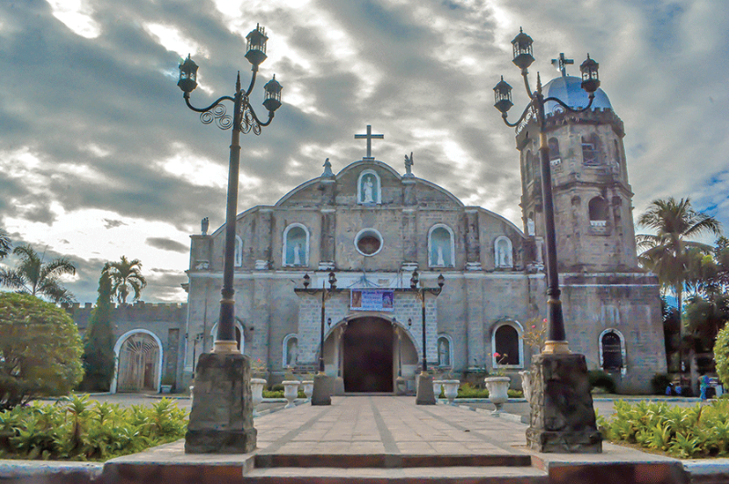

Unlocking the Treasures of Pampanga's Rich History: A Journey Worth Embracing
Pampanga, a province nestled in the heart of the Philippines, is rich in both historical significance and cultural legacy.
This prosperous province in Central Luzon is home to a wealth of legends, customs, and historical sites that have influenced the history of the country.
Every visitor and history enthusiast should go out on an adventure to discover Pampanga's undiscovered treasures!
Here are the Pampanga province sights and historical landmarks:
1. San Bartolome Parish Church
In the province of Pampanga, in the town of Hagonoy, sits the San Bartolome Parish Church, commonly known as the Malabon Church or Hagonoy Church. The church is a symbol of the region's rich past and has a major historical and cultural significance.
This historical site, which has roots in the late 18th century, has exquisite baroque-style architecture and intricate carvings that have weathered the test of time. Its origins are rooted in the region's rich tradition. The San Bartolome Parish Church, a revered
place of worship for the local community and a site of historical significance, provides tourists with an enthralling look into the colonial history of the Philippines.
2.Clark Veterans Ceremony
The Clark Veterans Cemetery, located in Pampanga, Philippines, honors the courage and sacrifice of those who served in the US Armed Forces by serving as a somber and significant historical landmark.
The cemetery, which was founded in 1947, is the final resting place for thousands of American and Filipino service members who died while serving in World War II and other wars.
This holy ground serves as a place of reverence and meditation, recognizing the bravery and commitment of those who lost their lives in service to their respective nations. It serves as a poignant reminder of the common history between the Philippines and the United States.
3. The Jose Abad Santos Historical Marker
The Jose Abad Santos Historical Marker is situated in the Pampanga town of Bacolor. Jose Abad Santos was taken by the Japanese soldiers at Bacolor during World War II, and this monument honors his valor and sacrifice during that conflict.
The historical marks serves as a reminder of his unshakeable ideals and his commitment to justice and the rule of law, even in the midst of difficulties. It serves as a testament to both his bravery and the other sacrifices made by people throughout the conflict.
Visits to the Jose Abad Santos Historical Marker provide an opportunity to honor a real patriot and gain knowledge of the crucial part he played in the history of the Philippines.
4. Pampanga Provincial Capitol
The provincial capital building, which is located in San Fernando, serves as a representation of Pampanga's governance and history. It was built in the American colonial era and is an elegant neoclassical building.
A magnificent neoclassical building serves as a notable historical landmark and exemplifies the area's lengthy political and governmental history. The capitol's magnificence and beauty have seen many important occasions, acting as a representation of leadership and cohesion for the Pampanga people.
5. Camalig
The "camalig" in Pampanga is a historical site of importance for both culture and architecture. During the Spanish colonial era, agricultural items, notably rice, were frequently stored in a camalig, a typical Filipino building. The crop was shielded from the weather and pests by these shelters, which were often built of thatch and bamboo.
Some camaligs have been transformed into historical sites, popular tourist destinations, or venues for events in the modern day, thus maintaining their cultural and historical significance. A great opportunity to explore Pampanga's rural customs and better understand its rich cultural legacy is to visit a camalig.
These historical sites and landmarks are important tourist destinations for both tourists and residents since they provide views into Pampanga's history, architecture, and culture.

Beverly Rodriguez
A seasoned and prolific author of the blogosphere, whose expertise spans a wide array of topics. With a keen intellect and a gift for eloquent expression, this author's blog is a treasure trove of thought-provoking insights, well-researched articles, and engaging narratives that captivate readers from all walks of life. Whether exploring the realms of technology, science, literature, or personal growth, their impeccable writing style and dedication to delivering high-quality content make them a trusted and respected voice in the world of blogging.
Ethan Rodriguez
The rich history of Pampanga is truly fascinating! From its pre-colonial roots to its pivotal role during the Spanish colonial era and the Philippines' fight for independence, the province has witnessed and contributed to significant historical events that have shaped the nation's identity.
Reply
Aria Patel
Pampanga's rich history is like a captivating journey through time. The tales of resilience, cultural exchanges, and historical landmarks make it a compelling destination for history enthusiasts seeking to understand the Philippines' vibrant past.
Reply
Isabella Chen
Absolutely! I am sure that visiting it will never be boring. Participating in their festivals will surely give me awesome and unforgettable experiences.
Reply
Sophia Nguyen
Pampanga's history is a treasure trove of stories that showcase the province's dynamic evolution over the centuries. From its indigenous roots to the influences of various foreign powers, delving into Pampanga's past reveals a tapestry of traditions and heritage that continues to shape its vibrant present.
Reply